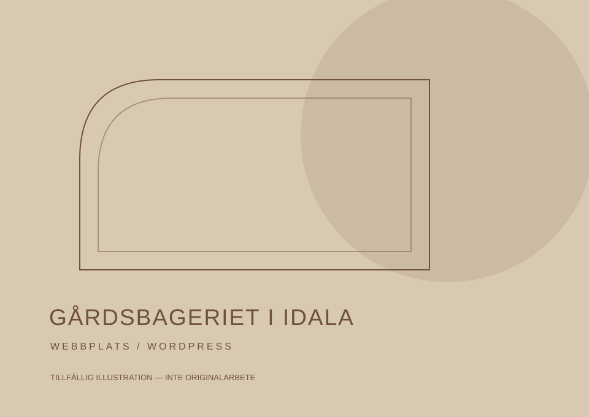
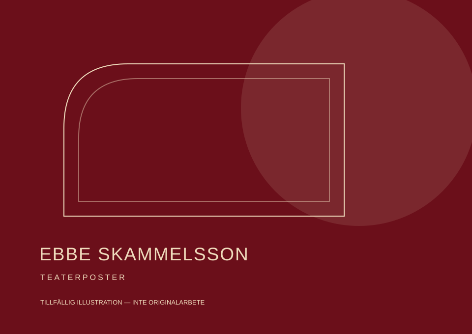
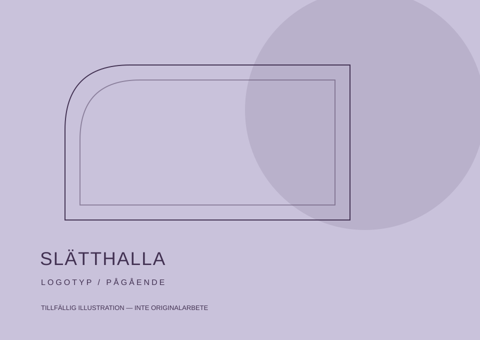

Digital design / Portfolio
Design och kod.
Från idé till webb.
Jag studerar Digital design vid Högskolan Kristianstad och tycker om att skapa hemsidor där form och funktion möts.
Se mina projekt ↘
● Söker praktik · december–januari
Utvalda projekt
Webb, grafisk design & identitet
Tillfällig bildGårdsbageriet i Idala
Från Wix till WordPress. En helt ombyggd webbplats och ett fortsatt ansvar för den digitala närvaron.

Tillfällig bildEbbe Skammelsson
Poster till Teatersällskapet Ebbes uppsättning av Ebbe Skammelsson.

Tillfällig bildSlätthalla
En logotyp under utveckling för den nya scenen i Stättared.
Lite om mig
Jag gillar att få både
formen och koden på plats.
Jag arbetar med kod, WordPress, Figma och Adobes verktyg. Nu söker jag en praktikplats där jag får bidra i riktiga webbprojekt och fortsätta utvecklas.
Lär känna mig ↗Praktik · december–januari